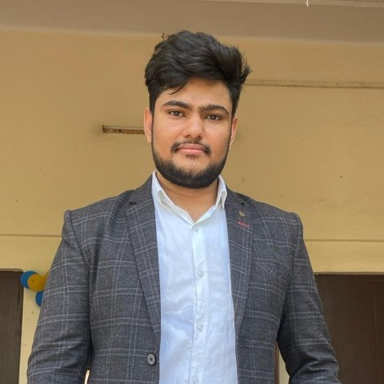
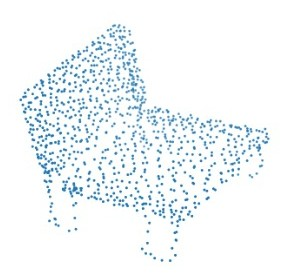
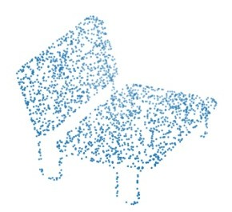
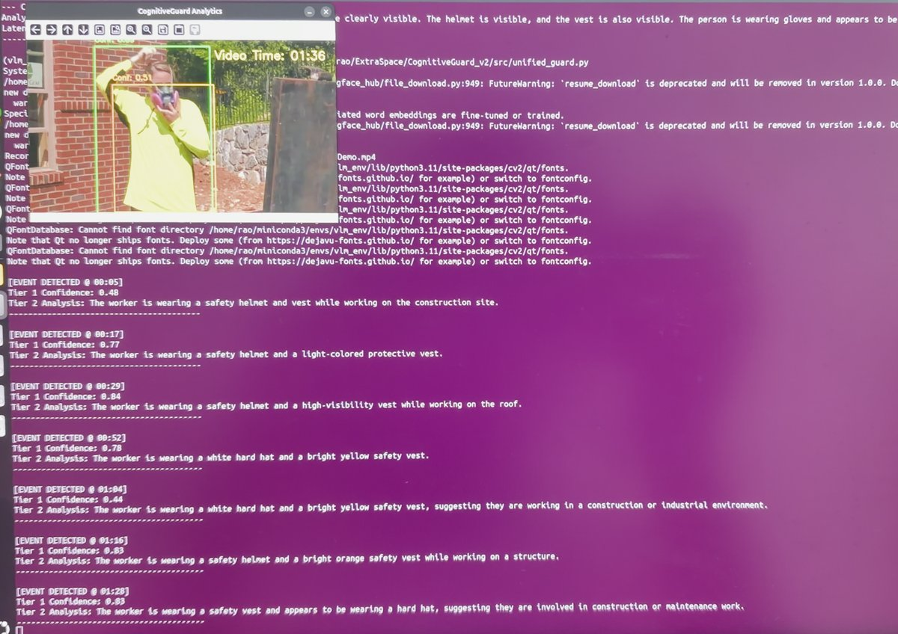

FRAME 000231
M.Tech · Cyber Physical Systems · IIT Jodhpur
Turning research papers into working 3D perception systems.
I work on deep learning, computer vision and LiDAR perception for autonomous driving, from motion prediction on point clouds to detection, segmentation and 3D reconstruction.

About
I’m an M.Tech researcher at IIT Jodhpur with hands-on experience in deep learning, computer vision and 3D/LiDAR perception, spanning object detection, segmentation, point-cloud processing and motion prediction.
I’m skilled at turning research papers into working PyTorch code, training models at scale on GPUs and HPC clusters, and containerizing pipelines with Docker. I have a strong foundation in data structures, algorithms and software design (Python, C/C++), and I like learning emerging technologies by building with them.
Education
M.Tech, Cyber Physical Systems
Coursework: Deep Learning, Machine Learning, Computer Vision, Control Systems, Cyber Security.
B.Tech, Computer Science and Engineering
Coursework: Data Structures and Algorithms, Operating Systems, Database Management Systems.
School
Research
Master’s Thesis: Class-Agnostic Motion Prediction from LiDAR (LEGO-Motion)
Problem
LEGO-Motion has key limitations when predicting motion for moving instances across LiDAR frames.
Approach
Temporal instance identity persistence (consistently tracking moving instances across frames) as the core contribution, plus uncertainty-aware, multi-modal motion prediction.
Progress
MotionNet baseline reproduced on full nuScenes (500 train / 100 val scenes), 45 epochs via SLURM, with results close to the published numbers. Proposed modules are now being built on top.
Additional ideas being adapted
- MF-MOS’s variable frame-stride residual idea, to better detect slow-moving objects.
- A HiMo-style self-supervised scene-flow undistortion step, to correct motion distortion of fast-moving objects in point clouds before voxelization.
A Point Set Generation Network for 3D Object Reconstruction
- Implemented a point set generation architecture from scratch to reconstruct 3D object models (point clouds) from single 2D images.
- Translated concepts from contemporary computer vision papers into working PyTorch code.
- Collaborated in a 4-person research team on dataset processing and rendering.


Projects
CognitiveGuard: Industrial Safety VLM System
Problem
Real-time PPE compliance monitoring, with limited suitable training data.
Approach
A YOLOv8 detection pipeline on a targeted, curated Kaggle dataset, with the Moondream2 vision-language model analysing detections to write contextual safety compliance reports.
Result
90.5% mAP on validation. Containerized with Docker for reproducibility on local RTX GPU hardware.

3D Cardiac MRI Volumetric Segmentation Pipeline
Problem
Automated segmentation of cardiac structures (ventricles and myocardium) from multi-slice MRI volumes in NIfTI format.
Approach
End-to-end 3D U-Net with residual skip connections to preserve fine spatial detail, trained with a combined Soft Dice + Cross-Entropy loss for severe foreground–background imbalance.
Robustness & output
Noise-injection tests, ITK-SNAP-compatible masks with preserved affine metadata, training on a Linux HPC cluster via SLURM.
CNN Robustness & Bias Mitigation
Stress-tested CNN classifiers with failure-mode analysis, using Grad-CAM attention maps to uncover background biases affecting predictions, then applied targeted data augmentation to improve generalization.
MARL for Optimal Trade Execution
Developing a high-frequency trading simulator with Multi-Agent Reinforcement Learning (JaxMARL-HFT) to optimize trade execution on Limit Order Book data, with training pipelines spread across local hardware and HPC clusters.
Reinforcement Learning: PPO Objective Analysis
Implemented and compared Clipped vs. Unclipped PPO objectives on CartPole-v1 to analyse policy stability and reward convergence.
Currently building: LLM & agentic systems
MCP Server for LLM Tool Integration
A Model Context Protocol server that exposes tools to LLM agents with typed input schemas and error handling, so agents can call them in a standard way.
RAG Question-Answering System
An end-to-end retrieval-augmented pipeline: chunking, embeddings, vector indexing and retrieval, with an open-source LLM generating grounded answers. Retrieval settings compared against prompting-only.
Tool-Using LLM Agent + Evaluation Harness
An agent that plans and calls tools via MCP using few-shot and chain-of-thought prompting with JSON outputs, plus an automated test suite covering hallucination and prompt-injection cases.
Experience
Teaching Assistant, 3D Vision Summer School (3DVSS)
Supported participants during hands-on sessions and cleared doubts on 3D vision and deep learning concepts.
Skills
Contact
Open to research discussions, collaborations and opportunities in 3D vision and autonomous driving perception.